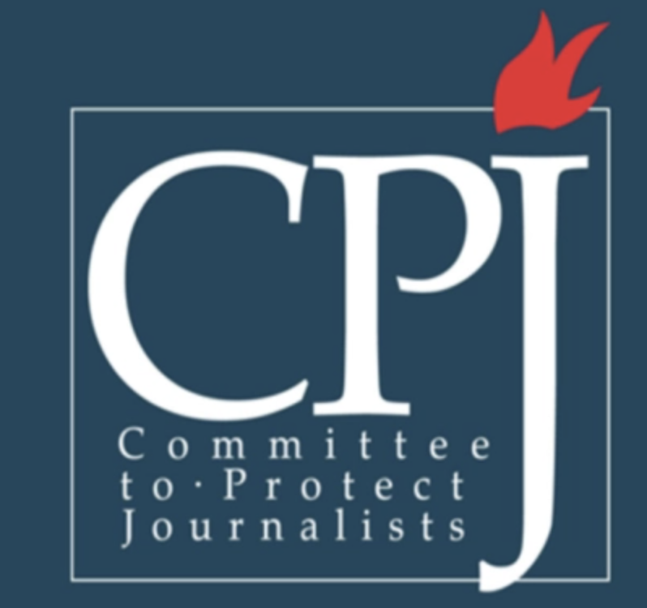

 The Committee to Protect Journalists is an independent, nonprofit organization that promotes press freedom worldwide. We defend the right of journalists to report the news without fear of reprisal.
CPJ's History
The Committee to Protect Journalsits was founded in 1981 by a group of U.S. correspondents who realized they could not ignore the plight of colleagues whose reporting put them in peril on a daily basis. The idea that journalists around the world should come together to defend the rights of colleagues working in repressive and dangerous environments led to CPJ's first advocacy campaign in 1982. At the time, three British journalists-Simon Winchester, Ian Mather, and Tony Prime-were arrested in Argentina while covering the Falklands War. A letter from CPJ Honarary Chairman Walter Cronkite helped spring them from prison.
Since then, CPJ's mission involves not only journalists but anyone who cherishes the value of information for a free society.